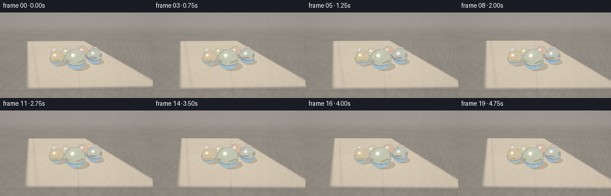
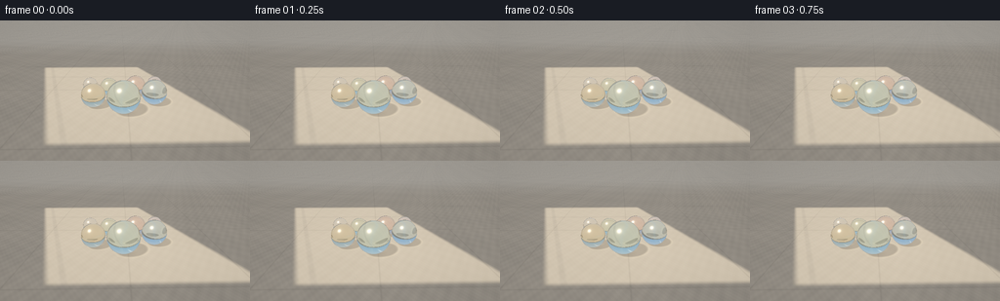

CODING AGENTS AS PIXEL WORLD MODELS
traex/GPT-5.6-Sol · phygen_078
点击播放 · 原生 RGB 像素
逐轮保存的候选
回放视频、检查图与代码变化。
每份候选均可单独播放。实际图片检查记录在下方工具轨迹中。
候选 01播放与检查图
点击播放 · 原生 RGB 像素


展开代码变化
--- 上一保存版本
+++ 本次保存版本
@@ -0,0 +1,270 @@
+"""Procedurally render the requested 5-second RGB video.
+
+A small analytic ray tracer is used instead of external renderers: camera rays hit a
+textured floor or one of seven glass spheres. Sphere rays are refracted twice,
+reflected with Schlick Fresnel, and receive sun glints. The floor receives soft
+window sunlight plus translucent glass shadows and caustic rims.
+"""
+from pathlib import Path
+import math
+import numpy as np
+from PIL import Image
+import artifact_io
+
+CASE_DIR = Path(__file__).resolve().parent
+W, H, N = 256, 144, 20
+SS = 2
+RW, RH = W * SS, H * SS
+
+# (x, y, radius), arranged in depth so every marble reads clearly.
+SPHERES = np.array([
+ [-0.05, -0.72, 0.61],
+ [-1.22, -0.22, 0.47],
+ [ 1.18, -0.03, 0.50],
+ [-0.67, 0.87, 0.39],
+ [ 0.49, 0.86, 0.44],
+ [ 1.43, 1.36, 0.34],
+ [-1.57, 1.30, 0.33],
+], dtype=np.float64)
+CENTERS = np.column_stack((SPHERES[:, :2], SPHERES[:, 2]))
+RADII = SPHERES[:, 2]
+# Very restrained absorption colours: these remain transparent glass, not opaque balls.
+TINTS = np.array([
+ [0.78, 0.96, 0.94], # aqua-clear hero marble
+ [0.94, 0.84, 0.61], # honey
+ [0.68, 0.86, 0.97], # blue
+ [0.86, 0.98, 0.79], # green
+ [0.98, 0.73, 0.69], # coral
+ [0.77, 0.73, 0.98], # violet
+ [0.94, 0.96, 1.00], # clear
+], dtype=np.float64)
+SUN = np.array([-0.54, -0.34, 1.0], dtype=np.float64)
+SUN /= np.linalg.norm(SUN)
+
+
+def smoothstep(edge0, edge1, x):
+ t = np.clip((x - edge0) / (edge1 - edge0), 0.0, 1.0)
+ return t * t * (3.0 - 2.0 * t)
+
+
+def normalize(v):
+ return v / np.maximum(np.linalg.norm(v, axis=-1, keepdims=True), 1e-9)
+
+
+def floor_colour(x, y, shadows=True):
+ """Linear-light warm limestone floor under a large diagonal window patch."""
+ # Multi-frequency deterministic stone grain and broad mottling in world space.
+ grain = (0.45 * np.sin(8.7*x + 3.1*y) * np.sin(6.1*y - 1.8*x)
+ + 0.30 * np.sin(19.3*x - 12.7*y + 0.4)
+ + 0.18 * np.sin(41.0*x + 31.0*y)
+ + 0.07 * np.sin(93.0*x - 71.0*y))
+ broad = 0.5 + 0.5*np.sin(1.17*x + 0.73*y + 0.8) * np.sin(0.59*x - 1.31*y)
+ base = np.stack([
+ 0.315 + .030*grain + .025*broad,
+ 0.286 + .027*grain + .021*broad,
+ 0.245 + .022*grain + .017*broad,
+ ], axis=-1)
+
+ # Sunlight enters as a broad skewed quadrilateral with believable soft edges.
+ u = x + 0.38*y
+ patch = (smoothstep(-3.35, -3.08, u) * smoothstep(3.20, 2.93, u)
+ * smoothstep(-2.65, -2.40, y) * smoothstep(5.7, 5.25, y))
+ # Faint shadows of two distant window mullions add context without crossing faces.
+ mullion = (0.14*np.exp(-((u + 2.72)/0.105)**4)
+ + 0.10*np.exp(-((y - 3.45)/0.14)**4))
+ patch *= (1.0 - mullion)
+ sun_add = np.stack([0.50*patch, 0.405*patch, 0.275*patch], axis=-1)
+ col = base + sun_add
+
+ # Fine expansion seams; low contrast so the image remains naturalistic.
+ seam_x = np.exp(-(np.abs(np.mod(x + 1.66, 3.55) - 1.775)/0.026)**2)
+ seam_y = np.exp(-(np.abs(np.mod(y + 0.62, 4.20) - 2.10)/0.030)**2)
+ seam = np.clip(seam_x + seam_y, 0, 1)[..., None]
+ col *= (1.0 - 0.12*seam)
+
+ if shadows:
+ q = np.stack((x, y, np.zeros_like(x)), axis=-1)
+ for c, r in zip(CENTERS, RADII):
+ to_c = c - q
+ along = np.sum(to_c * SUN, axis=-1)
+ perp = to_c - along[..., None]*SUN
+ rho = np.linalg.norm(perp, axis=-1) / r
+ # Soft translucent body shadow. Glass never makes an opaque black blot.
+ body = smoothstep(1.09, 0.77, rho) * smoothstep(-0.08, 0.10, along)
+ col *= (1.0 - (0.31*body)[..., None])
+ # Focused caustic at the down-sun edge and a thin bright crescent/ring.
+ ring = np.exp(-((rho - 0.94)/0.080)**2) * (along > 0)
+ focus = np.exp(-(rho/0.25)**2) * (along > 0)
+ col += (0.19*ring + 0.07*focus)[..., None] * np.array([1.0, .84, .55])
+ # Tight contact occlusion directly below each marble.
+ hd = np.sqrt((x-c[0])**2 + (y-c[1])**2)
+ contact = np.exp(-(hd/(r*.49))**2)
+ col *= (1.0 - (0.18*contact)[..., None])
+
+ # Gentle atmospheric lift in the remote part of the floor.
+ haze = smoothstep(7.0, 20.0, y)[..., None]
+ col = col*(1-haze*.24) + np.array([.66, .65, .61])*haze*.24
+ return np.clip(col, 0, 1.45)
+
+
+def environment(d):
+ """Simple sun/sky/room radiance used in curved glass reflections."""
+ up = np.clip(d[..., 2], 0, 1)
+ sky = (np.array([0.38, 0.56, 0.74])*(1-up[..., None])
+ + np.array([0.74, 0.84, 0.92])*up[..., None])
+ ground = np.array([0.31, 0.27, 0.22]) + np.clip(-d[..., 2], 0, 1)[..., None]*np.array([.20,.16,.11])
+ col = np.where((d[..., 2] > 0)[..., None], sky, ground)
+ # Sun disc and soft halo, visible as pin highlights on the curved surfaces.
+ sd = np.clip(np.sum(d*SUN, axis=-1), 0, 1)
+ col += (2.8*np.power(sd, 700) + 0.27*np.power(sd, 45))[..., None]*np.array([1.0,.83,.56])
+ # A slim bright window edge reflected in the glass.
+ window_edge = np.exp(-((d[..., 0] + .60*d[..., 2] + .10)/.035)**2) * smoothstep(.03,.38,d[...,2])
+ col += window_edge[...,None]*np.array([.42,.38,.30])
+ return col
+
+
+def refract(i, n, eta):
+ cosi = -np.sum(n*i, axis=-1)
+ k = 1.0 - eta*eta*(1.0-cosi*cosi)
+ out = eta*i + (eta*cosi - np.sqrt(np.maximum(k, 0)))[..., None]*n
+ return normalize(out), k >= 0
+
+
+def camera_rays(frame_index):
+ # A very slow 24-cm dolly/orbit supplies parallax while preserving a calm still life.
+ s = frame_index / (N-1)
+ ease = s*s*(3-2*s)
+ cam = np.array([-0.13 + 0.26*ease, -6.72 + 0.18*ease, 3.38 + .025*math.sin(s*math.pi)])
+ target = np.array([0.02, 0.31, 0.43])
+ fwd = normalize(target-cam)
+ right = normalize(np.cross(fwd, np.array([0.,0.,1.])))
+ up = normalize(np.cross(right, fwd))
+ yy, xx = np.mgrid[0:RH, 0:RW]
+ aspect = RW/RH
+ scale = math.tan(math.radians(42.0)/2)
+ sx = ((xx+.5)/RW*2-1)*aspect*scale
+ sy = (1-(yy+.5)/RH*2)*scale
+ dirs = normalize(fwd + sx[...,None]*right + sy[...,None]*up)
+ return cam, dirs
+
+
+def render(frame_index):
+ cam, d = camera_rays(frame_index)
+ shape = d.shape[:2]
+ nearest = np.full(shape, np.inf)
+ hit_id = np.full(shape, -1, dtype=np.int16)
+
+ # First visible analytic sphere intersection.
+ for j, (c, r) in enumerate(zip(CENTERS, RADII)):
+ oc = cam-c
+ b = np.sum(d*oc, axis=-1)
+ disc = b*b - (np.dot(oc,oc)-r*r)
+ good = disc > 0
+ t = -b - np.sqrt(np.maximum(disc, 0))
+ good &= t > 0
+ take = good & (t < nearest)
+ nearest[take] = t[take]
+ hit_id[take] = j
+
+ # Ordinary floor/background first.
+ col = np.zeros((RH,RW,3), dtype=np.float64)
+ plane_t = -cam[2] / np.minimum(d[...,2], -1e-5)
+ valid_floor = (d[...,2] < -1e-5) & (plane_t > 0)
+ qx = cam[0] + plane_t*d[...,0]
+ qy = cam[1] + plane_t*d[...,1]
+ floor = floor_colour(qx, qy, True)
+ col[valid_floor] = floor[valid_floor]
+ # Just above the far floor: a soft, overexposed room/terrace horizon.
+ bg = np.clip((d[...,2]+.08)/.30,0,1)[...,None]
+ background = np.array([.70,.73,.72])*(1-bg) + np.array([.78,.84,.86])*bg
+ col[~valid_floor] = background[~valid_floor]
+
+ # Resolve each glass sphere. Rays bend through both interfaces to the actual floor.
+ for j, (c, r) in enumerate(zip(CENTERS, RADII)):
+ mask = hit_id == j
+ if not np.any(mask):
+ continue
+ dm = d[mask]
+ tm = nearest[mask]
+ p = cam + tm[:,None]*dm
+ n = (p-c)/r
+ cos_view = np.clip(-np.sum(dm*n,axis=-1),0,1)
+ inside, _ = refract(dm, n, 1/1.50)
+
+ # Exact second intersection from just inside the sphere.
+ pin = p + inside*1e-5
+ oc = pin-c
+ b = np.sum(oc*inside,axis=-1)
+ cc = np.sum(oc*oc,axis=-1)-r*r
+ texit = -b + np.sqrt(np.maximum(b*b-cc,0))
+ pout = pin + texit[:,None]*inside
+ nout = (pout-c)/r
+ transmitted, ok = refract(inside, -nout, 1.50)
+ # Total internal reflection fallback (rare at this geometry).
+ refl_inside = inside - 2*np.sum(inside*nout,axis=-1)[:,None]*nout
+ transmitted = np.where(ok[:,None], transmitted, refl_inside)
+
+ # Refracted floor radiance, or sky where strongly bent rays look upward.
+ denom = transmitted[:,2]
+ tf = -pout[:,2] / np.minimum(denom, -1e-5)
+ goes_floor = (denom < -1e-5) & (tf > 0)
+ refr_col = environment(transmitted)
+ if np.any(goes_floor):
+ gx = pout[goes_floor,0] + tf[goes_floor]*transmitted[goes_floor,0]
+ gy = pout[goes_floor,1] + tf[goes_floor]*transmitted[goes_floor,1]
+ refr_col[goes_floor] = floor_colour(gx, gy, True)
+
+ # Beer-Lambert tinted absorption through the chord.
+ chord = np.maximum(texit,0)
+ absorption = -np.log(np.clip(TINTS[j], .1, 1.0))*0.74
+ refr_col *= np.exp(-chord[:,None]*absorption[None,:])
+
+ # Decorative coloured ribbon suspended inside selected marbles.
+ local = (p-c)/r
+ phase = j*1.73
+ ribbon_coord = (local[:,0]*math.cos(phase) + local[:,2]*math.sin(phase)
+ + .17*np.sin(4.2*local[:,1] + phase))
+ ribbon = np.exp(-(ribbon_coord/.105)**2) * (0.38 + .62*(1-cos_view)**.4)
+ ribbon_strength = [0.28,0.34,0.30,0.22,0.34,0.25,0.08][j]
+ ribbon_col = np.clip(TINTS[j]*np.array([.66,.76,.78]),0,1)
+ refr_col = refr_col*(1-ribbon[:,None]*ribbon_strength) + ribbon_col*ribbon[:,None]*ribbon_strength
+
+ # Reflection and angle-dependent Fresnel: bright glass rim and environment arcs.
+ reflected = dm - 2*np.sum(dm*n,axis=-1)[:,None]*n
+ reflected = normalize(reflected)
+ refl_col = environment(reflected)
+ fresnel = .040 + .960*np.power(1-cos_view,5)
+ glass = refr_col*(1-fresnel[:,None]) + refl_col*fresnel[:,None]
+
+ # Direct broad sun sparkle layered over the reflected pin highlight.
+ halfv = normalize(SUN-dm)
+ ndh = np.clip(np.sum(n*halfv,axis=-1),0,1)
+ sparkle = 1.75*np.power(ndh,150) + .15*np.power(ndh,24)
+ glass += sparkle[:,None]*np.array([1.0,.88,.68])
+ # Thin silhouette definition from long optical path at the edge.
+ edge = np.power(1-cos_view,2.7)
+ glass *= (1-.08*edge[:,None])
+ col[mask] = glass
+
+ # Filmic highlight roll-off, slight vignette and stable fine sensor grain.
+ col = np.maximum(col,0)
+ col = col/(1+0.30*col)
+ col = np.power(np.clip(col,0,1), 1/2.20)
+ yy,xx=np.mgrid[0:RH,0:RW]
+ rr=((xx-RW/2)/(RW*.73))**2+((yy-RH/2)/(RH*.82))**2
+ col *= (1-.075*np.clip(rr,0,1))[...,None]
+ noise = np.sin(xx*12.9898 + yy*78.233)*43758.5453
+ noise = (noise-np.floor(noise)-.5)*.006
+ col += noise[...,None]
+ rgb = np.uint8(np.clip(col*255+.5,0,255))
+ return np.asarray(Image.fromarray(rgb).resize((W,H), Image.Resampling.LANCZOS))
+
+
+def main():
+ frames = np.stack([render(i) for i in range(N)], axis=0).astype(np.uint8)
+ artifact_io.save(frames, CASE_DIR)
+ print(f"saved {frames.shape[0]} frames, {frames.shape[2]}x{frames.shape[1]}, dtype={frames.dtype}")
+
+
+if __name__ == '__main__':
+ main()
可观测工具轨迹
实际执行的命令与返回图片。
命令 1exit 0
/bin/bash -lc "cat prompt.txt && printf '\\n--- GENERATION_RULES ---\\n' && cat GENERATION_RULES.md && printf '\\n--- task_spec ---\\n' && cat task_spec.json"
命令 2exit 1
/bin/bash -lc "find . -maxdepth 2 -type f -printf '%p\\n' | sort && printf '\\nTOOLS\\n' && command -v ffmpeg && command -v python3 && python3 - <<'PY' mods=['numpy','PIL','cv2','imageio','moviepy','scipy'] for m in mods: try: x=__import__(m); print(m,'OK',getattr(x,'__version__','')) except Exception as e: print(m,'NO',e) PY"
命令 3exit 0
/bin/bash -lc 'cat artifact_io.py'
命令 4exit 0
/bin/bash -lc 'for x in python3 ffmpeg convert; do printf "$x: "; command -v "$x" || true; done; python3 - <<'"'PY' mods=['numpy','PIL','cv2','imageio','moviepy','scipy'] for m in mods: try: x=__import__(m); print(m,'OK',getattr(x,'__version__','')) except Exception as e: print(m,'NO',type(e).__name__,e) PY"
命令 5exit 0
/bin/bash -lc "cat > generate.py <<'PY'
\"\"\"Procedurally render the requested 5-second RGB video.
A small analytic ray tracer is used instead of external renderers: camera rays hit a
textured floor or one of seven glass spheres. Sphere rays are refracted twice,
reflected with Schlick Fresnel, and receive sun glints. The floor receives soft
window sunlight plus translucent glass shadows and caustic rims.
\"\"\"
from pathlib import Path
import math
import numpy as np
from PIL import Image
import artifact_io
CASE_DIR = Path(__file__).resolve().parent
W, H, N = 256, 144, 20
SS = 2
RW, RH = W * SS, H * SS
# (x, y, radius), arranged in depth so every marble reads clearly.
SPHERES = np.array([
[-0.05, -0.72, 0.61],
[-1.22, -0.22, 0.47],
[ 1.18, -0.03, 0.50],
[-0.67, 0.87, 0.39],
[ 0.49, 0.86, 0.44],
[ 1.43, 1.36, 0.34],
[-1.57, 1.30, 0.33],
], dtype=np.float64)
CENTERS = np.column_stack((SPHERES[:, :2], SPHERES[:, 2]))
RADII = SPHERES[:, 2]
# Very restrained absorption colours: these remain transparent glass, not opaque balls.
TINTS = np.array([
[0.78, 0.96, 0.94], # aqua-clear hero marble
[0.94, 0.84, 0.61], # honey
[0.68, 0.86, 0.97], # blue
[0.86, 0.98, 0.79], # green
[0.98, 0.73, 0.69], # coral
[0.77, 0.73, 0.98], # violet
[0.94, 0.96, 1.00], # clear
], dtype=np.float64)
SUN = np.array([-0.54, -0.34, 1.0], dtype=np.float64)
SUN /= np.linalg.norm(SUN)
def smoothstep(edge0, edge1, x):
t = np.clip((x - edge0) / (edge1 - edge0), 0.0, 1.0)
return t * t * (3.0 - 2.0 * t)
def normalize(v):
return v / np.maximum(np.linalg.norm(v, axis=-1, keepdims=True), 1e-9)
def floor_colour(x, y, shadows=True):
\"\"\"Linear-light warm limestone floor under a large diagonal window patch.\"\"\"
# Multi-frequency deterministic stone grain and broad mottling in world space.
grain = (0.45 * np.sin(8.7*x + 3.1*y) * np.sin(6.1*y - 1.8*x)
+ 0.30 * np.sin(19.3*x - 12.7*y + 0.4)
+ 0.18 * np.sin(41.0*x + 31.0*y)
+ 0.07 * np.sin(93.0*x - 71.0*y))
broad = 0.5 + 0.5*np.sin(1.17*x + 0.73*y + 0.8) * np.sin(0.59*x - 1.31*y)
base = np.stack([
0.315 + .030*grain + .025*broad,
0.286 + .027*grain + .021*broad,
0.245 + .022*grain + .017*broad,
], axis=-1)
# Sunlight enters as a broad skewed quadrilateral with believable soft edges.
u = x + 0.38*y
patch = (smoothstep(-3.35, -3.08, u) * smoothstep(3.20, 2.93, u)
* smoothstep(-2.65, -2.40, y) * smoothstep(5.7, 5.25, y))
# Faint shadows of two distant window mullions add context without crossing faces.
mullion = (0.14*np.exp(-((u + 2.72)/0.105)**4)
+ 0.10*np.exp(-((y - 3.45)/0.14)**4))
patch *= (1.0 - mullion)
sun_add = np.stack([0.50*patch, 0.405*patch, 0.275*patch], axis=-1)
col = base + sun_add
# Fine expansion seams; low contrast so the image remains naturalistic.
seam_x = np.exp(-(np.abs(np.mod(x + 1.66, 3.55) - 1.775)/0.026)**2)
seam_y = np.exp(-(np.abs(np.mod(y + 0.62, 4.20) - 2.10)/0.030)**2)
seam = np.clip(seam_x + seam_y, 0, 1)[..., None]
col *= (1.0 - 0.12*seam)
if shadows:
q = np.stack((x, y, np.zeros_like(x)), axis=-1)
for c, r in zip(CENTERS, RADII):
to_c = c - q
along = np.sum(to_c * SUN, axis=-1)
perp = to_c - along[..., None]*SUN
rho = np.linalg.norm(perp, axis=-1) / r
# Soft translucent body shadow. Glass never makes an opaque black blot.
body = smoothstep(1.09, 0.77, rho) * smoothstep(-0.08, 0.10, along)
col *= (1.0 - (0.31*body)[..., None])
# Focused caustic at the down-sun edge and a thin bright crescent/ring.
ring = np.exp(-((rho - 0.94)/0.080)**2) * (along > 0)
focus = np.exp(-(rho/0.25)**2) * (along > 0)
col += (0.19*ring + 0.07*focus)[..., None] * np.array([1.0, .84, .55])
# Tight contact occlusion directly below each marble.
hd = np.sqrt((x-c[0])**2 + (y-c[1])**2)
contact = np.exp(-(hd/(r*.49))**2)
col *= (1.0 - (0.18*contact)[..., None])
# Gentle atmospheric lift in the remote part of the floor.
haze = smoothstep(7.0, 20.0, y)[..., None]
col = col*(1-haze*.24) + np.array([.66, .65, .61])*haze*.24
return np.clip(col, 0, 1.45)
def environment(d):
\"\"\"Simple sun/sky/room radiance used in curved glass reflections.\"\"\"
up = np.clip(d[..., 2], 0, 1)
sky = (np.array([0.38, 0.56, 0.74])*(1-up[..., None])
+ np.array([0.74, 0.84, 0.92])*up[..., None])
ground = np.array([0.31, 0.27, 0.22]) + np.clip(-d[..., 2], 0, 1)[..., None]*np.array([.20,.16,.11])
col = np.where((d[..., 2] > 0)[..., None], sky, ground)
# Sun disc and soft halo, visible as pin highlights on the curved surfaces.
sd = np.clip(np.sum(d*SUN, axis=-1), 0, 1)
col += (2.8*np.power(sd, 700) + 0.27*np.power(sd, 45))[..., None]*np.array([1.0,.83,.56])
# A slim bright window edge reflected in the glass.
window_edge = np.exp(-((d[..., 0] + .60*d[..., 2] + .10)/.035)**2) * smoothstep(.03,.38,d[...,2])
col += window_edge[...,None]*np.array([.42,.38,.30])
return col
def refract(i, n, eta):
cosi = -np.sum(n*i, axis=-1)
k = 1.0 - eta*eta*(1.0-cosi*cosi)
out = eta*i + (eta*cosi - np.sqrt(np.maximum(k, 0)))[..., None]*n
return normalize(out), k >= 0
def camera_rays(frame_index):
# A very slow 24-cm dolly/orbit supplies parallax while preserving a calm still life.
s = frame_index / (N-1)
ease = s*s*(3-2*s)
cam = np.array([-0.13 + 0.26*ease, -6.72 + 0.18*ease, 3.38 + .025*math.sin(s*math.pi)])
target = np.array([0.02, 0.31, 0.43])
fwd = normalize(target-cam)
right = normalize(np.cross(fwd, np.array([0.,0.,1.])))
up = normalize(np.cross(right, fwd))
yy, xx = np.mgrid[0:RH, 0:RW]
aspect = RW/RH
scale = math.tan(math.radians(42.0)/2)
sx = ((xx+.5)/RW*2-1)*aspect*scale
sy = (1-(yy+.5)/RH*2)*scale
dirs = normalize(fwd + sx[...,None]*right + sy[...,None]*up)
return cam, dirs
def render(frame_index):
cam, d = camera_rays(frame_index)
shape = d.shape[:2]
nearest = np.full(shape, np.inf)
hit_id = np.full(shape, -1, dtype=np.int16)
# First visible analytic sphere intersection.
for j, (c, r) in enumerate(zip(CENTERS, RADII)):
oc = cam-c
b = np.sum(d*oc, axis=-1)
disc = b*b - (np.dot(oc,oc)-r*r)
good = disc > 0
t = -b - np.sqrt(np.maximum(disc, 0))
good &= t > 0
take = good & (t < nearest)
nearest[take] = t[take]
hit_id[take] = j
# Ordinary floor/background first.
col = np.zeros((RH,RW,3), dtype=np.float64)
plane_t = -cam[2] / np.minimum(d[...,2], -1e-5)
valid_floor = (d[...,2] < -1e-5) & (plane_t > 0)
qx = cam[0] + plane_t*d[...,0]
qy = cam[1] + plane_t*d[...,1]
floor = floor_colour(qx, qy, True)
col[valid_floor] = floor[valid_floor]
# Just above the far floor: a soft, overexposed room/terrace horizon.
bg = np.clip((d[...,2]+.08)/.30,0,1)[...,None]
background = np.array([.70,.73,.72])*(1-bg) + np.array([.78,.84,.86])*bg
col[~valid_floor] = background[~valid_floor]
# Resolve each glass sphere. Rays bend through both interfaces to the actual floor.
for j, (c, r) in enumerate(zip(CENTERS, RADII)):
mask = hit_id == j
if not np.any(mask):
continue
dm = d[mask]
tm = nearest[mask]
p = cam + tm[:,None]*dm
n = (p-c)/r
cos_view = np.clip(-np.sum(dm*n,axis=-1),0,1)
inside, _ = refract(dm, n, 1/1.50)
# Exact second intersection from just inside the sphere.
pin = p + inside*1e-5
oc = pin-c
b = np.sum(oc*inside,axis=-1)
cc = np.sum(oc*oc,axis=-1)-r*r
texit = -b + np.sqrt(np.maximum(b*b-cc,0))
pout = pin + texit[:,None]*inside
nout = (pout-c)/r
transmitted, ok = refract(inside, -nout, 1.50)
# Total internal reflection fallback (rare at this geometry).
refl_inside = inside - 2*np.sum(inside*nout,axis=-1)[:,None]*nout
transmitted = np.where(ok[:,None], transmitted, refl_inside)
# Refracted floor radiance, or sky where strongly bent rays look upward.
denom = transmitted[:,2]
tf = -pout[:,2] / np.minimum(denom, -1e-5)
goes_floor = (denom < -1e-5) & (tf > 0)
refr_col = environment(transmitted)
if np.any(goes_floor):
gx = pout[goes_floor,0] + tf[goes_floor]*transmitted[goes_floor,0]
gy = pout[goes_floor,1] + tf[goes_floor]*transmitted[goes_floor,1]
refr_col[goes_floor] = floor_colour(gx, gy, True)
# Beer-Lambert tinted absorption through the chord.
chord = np.maximum(texit,0)
absorption = -np.log(np.clip(TINTS[j], .1, 1.0))*0.74
refr_col *= np.exp(-chord[:,None]*absorption[None,:])
# Decorative coloured ribbon suspended inside selected marbles.
local = (p-c)/r
phase = j*1.73
ribbon_coord = (local[:,0]*math.cos(phase) + local[:,2]*math.sin(phase)
+ .17*np.sin(4.2*local[:,1] + phase))
ribbon = np.exp(-(ribbon_coord/.105)**2) * (0.38 + .62*(1-cos_view)**.4)
ribbon_strength = [0.28,0.34,0.30,0.22,0.34,0.25,0.08][j]
ribbon_col = np.clip(TINTS[j]*np.array([.66,.76,.78]),0,1)
refr_col = refr_col*(1-ribbon[:,None]*ribbon_strength) + ribbon_col*ribbon[:,None]*ribbon_strength
# Reflection and angle-dependent Fresnel: bright glass rim and environment arcs.
reflected = dm - 2*np.sum(dm*n,axis=-1)[:,None]*n
reflected = normalize(reflected)
refl_col = environment(reflected)
fresnel = .040 + .960*np.power(1-cos_view,5)
glass = refr_col*(1-fresnel[:,None]) + refl_col*fresnel[:,None]
# Direct broad sun sparkle layered over the reflected pin highlight.
halfv = normalize(SUN-dm)
ndh = np.clip(np.sum(n*halfv,axis=-1),0,1)
sparkle = 1.75*np.power(ndh,150) + .15*np.power(ndh,24)
glass += sparkle[:,None]*np.array([1.0,.88,.68])
# Thin silhouette definition from long optical path at the edge.
edge = np.power(1-cos_view,2.7)
glass *= (1-.08*edge[:,None])
col[mask] = glass
# Filmic highlight roll-off, slight vignette and stable fine sensor grain.
col = np.maximum(col,0)
col = col/(1+0.30*col)
col = np.power(np.clip(col,0,1), 1/2.20)
yy,xx=np.mgrid[0:RH,0:RW]
rr=((xx-RW/2)/(RW*.73))**2+((yy-RH/2)/(RH*.82))**2
col *= (1-.075*np.clip(rr,0,1))[...,None]
noise = np.sin(xx*12.9898 + yy*78.233)*43758.5453
noise = (noise-np.floor(noise)-.5)*.006
col += noise[...,None]
rgb = np.uint8(np.clip(col*255+.5,0,255))
return np.asarray(Image.fromarray(rgb).resize((W,H), Image.Resampling.LANCZOS))
def main():
frames = np.stack([render(i) for i in range(N)], axis=0).astype(np.uint8)
artifact_io.save(frames, CASE_DIR)
print(f\"saved {frames.shape[0]} frames, {frames.shape[2]}x{frames.shape[1]}, dtype={frames.dtype}\")
if __name__ == '__main__':
main()
PY
python3 generate.py
ls -lh pixels.npz inspection.png transition_check.png index.html frames/00.png frames/19.png"命令 6exit 0
/bin/bash -lc "python3 - <<'PY'
import numpy as np
from PIL import Image
from pathlib import Path
fs=np.stack([np.asarray(Image.open(f'frames/{i:02d}.png')) for i in range(20)])
print('shape/dtype/range',fs.shape,fs.dtype,fs.min(),fs.max())
print('channel means',fs.mean((0,1,2)).round(2),'std',fs.std((0,1,2)).round(2))
d=np.abs(fs[1:].astype(int)-fs[:-1].astype(int))
print('mean consecutive abs diff',d.mean((1,2,3)).round(3))
print('changed pixel fractions',((d.max(3)>2).mean((1,2))).round(3))
print('first-last MAD',np.abs(fs[-1].astype(int)-fs[0].astype(int)).mean().round(3))
z=np.load('pixels.npz')['pixels']
print('npz tensor',z.shape,z.dtype,'files',len(list(Path('frames').glob('*.png'))))
assert fs.shape==(20,144,256,3) and fs.dtype==np.uint8
assert z.shape==(144,256,20)
PY"保存候选 1 份；完成命令 6 次；可验证图片返回 0 张。原始 API 响应与完整日志保留在本地。